<!DOCTYPE html>
<html>
  <head>
    <title>24 34 562 Replacing Mechatronics (GA6HP19Z) — 2011 BMW 128i Coupe (E82) L6-3.0L (N52K) Service Manual | Operation CHARM</title>
    <meta name='description' content="Detailed repair manual for the 2011 BMW 128i Coupe (E82) L6-3.0L (N52K).">
    <link rel='stylesheet' href="../style.css">
    <meta name='viewport' content='width=device-width, initial-scale=1.0' />
  </head>
  <body>
    <div class='theme-colors header'>
      <div class='branding'><b>Operation CHARM</b>: Car repair manuals for everyone.</div>
<div class=breadcrumbs><a class='breadcrumb-part' href="../">Home</a> <b>&gt;&gt;</b> <a class='breadcrumb-part' href="../BMW/">BMW</a> <b>&gt;&gt;</b> <a class='breadcrumb-part' href="../BMW/2011/">2011</a> <b>&gt;&gt;</b> <a class='breadcrumb-part' href="../index.html">128i Coupe (E82) L6-3.0L (N52K)</a> <b>&gt;&gt;</b> <a class='breadcrumb-part' href="0.html">Repair and Diagnosis</a> <b>&gt;&gt;</b> <a class='breadcrumb-part' href="0.html#Transmission%20and%20Drivetrain/">Transmission and Drivetrain</a> <b>&gt;&gt;</b> <a class='breadcrumb-part' href="0.html#Transmission%20and%20Drivetrain/Automatic%20Transmission%2FTransaxle/">Automatic Transmission/Transaxle</a> <b>&gt;&gt;</b> <a class='breadcrumb-part' href="936.html">Valve Body</a> <b>&gt;&gt;</b> <a class='breadcrumb-part' href="936.html#Service%20and%20Repair/">Service and Repair</a> <b>&gt;&gt;</b> <a class='breadcrumb-part' href="936.html#Service%20and%20Repair/Removal%20and%20Replacement/">Removal and Replacement</a> <b>&gt;&gt;</b> <a class='breadcrumb-part' href="10162.html">24 34 562 Replacing Mechatronics (GA6HP19Z)</a></div></div>
<div class="theme-colors floaty-message lemon-message">
  <b style="font-size: 1.5em; color: gold">Manuals through 2025 now available!</b>
  <br><br>
  Our trusted friends have launched a new website named LEMON, which has newer manuals. It also contains all the CHARM manuals.
  <br><br>
  LEMON is the spiritual successor to  CHARM, I recommend you try it!
  <br><br>
  Link: <a style='white-space: nowrap' href="../missing-page">lemon-manuals.la</a> or <a style='white-space: nowrap' href="../missing-page">lemon-manuals.org.ua</a>
  <br><br>
  (Some people have issue connecting. LEMON is investigating. For now, use Firefox or change your DNS server)
  <br><br>
  Or, hide this message: <a href="../missing-page">temporarily</a> or <a href="../missing-page">permanently</a>
</div>
<div class='main'>
<h1>24 34 562 Replacing Mechatronics (GA6HP19Z)</h1><br><br><b>24 34 562 Replacing mechatronics (GA6HP19Z)</b><br><br><b>Special tools required:</b><br><br><br><div class='oxe-image'></div><br><br><br><br><br><b>NOTE:</b><br>After completing work:<br><span class='indent-2'>&#09;</span>-<span class='indent-5'>&#09;</span>Load specific data status with the BMW diagnosis system.<br><br><br><div class='oxe-image'></div><br><br><br><br><br><b>IMPORTANT:</b><br>After completion of work, check transmission oil level.<br>Use only approved gearbox oil.<br>Failure to comply with this requirement will result in serious damage to the automatic transmission.<br><br><br><div class='oxe-image'></div><br><br><br><br><br><b>IMPORTANT:</b>  Read and comply with notes on protection against electrostatic discharge (ESD protection).<br><br><br><div class='oxe-image'></div><br><br><br><br><br><b>Necessary preliminary tasks:</b><br><span class='indent-2'>&#09;</span>-<span class='indent-5'>&#09;</span>Remove heat shields.<br><span class='indent-2'>&#09;</span>-<span class='indent-5'>&#09;</span>Support the automatic transmission with hydraulic lifting equipment.<br><span class='indent-2'>&#09;</span>-<span class='indent-5'>&#09;</span>Remove transmission crossmember.<br><br><br><div class='oxe-image'>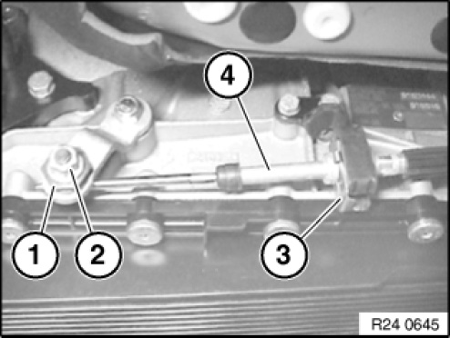</div><br><br><br><br><br><b>Version 1:</b><br>Grip clamping bush (1) and slacken nut (2).<br>Detach clamp (3) downwards using a screwdriver.<br>Pull cable (4) out of holder.<br><br>Installation note:<br>Adjust gearshift lever.<br><br><br><div class='oxe-image'>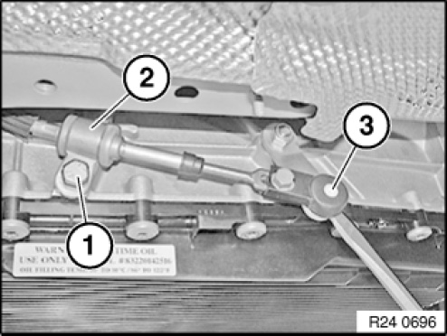</div><br><br><br><br><br><b>Version 2:</b><br>Release screw (1).<br>Remove clamping bracket (2).<br>Release shift cable head (3) using a screwdriver from ball head of shift cable lever.<br><br>Installation note:<br>Adjust gearshift lever.<br><br><br><div class='oxe-image'>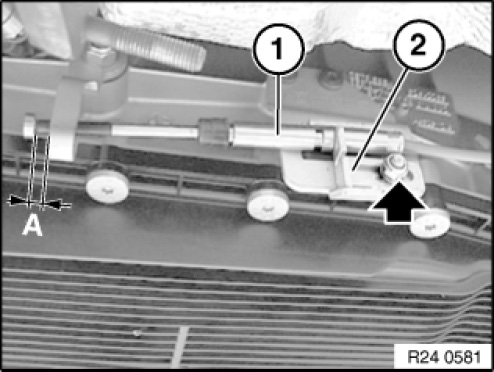</div><br><br><br><br><br><b>Version 3:</b><br>Unfasten nut.<br>Remove cable (1).<br><br>Installation note:<br>Adjusting cable:<br><span class='indent-2'>&#09;</span>-<span class='indent-5'>&#09;</span>Release nut<br><span class='indent-2'>&#09;</span>-<span class='indent-5'>&#09;</span>Adjust cable by means of holder (2) until spacing A = 1 mm is obtained<br><span class='indent-2'>&#09;</span>-<span class='indent-5'>&#09;</span>Tighten down nut<br><br><br><div class='oxe-image'>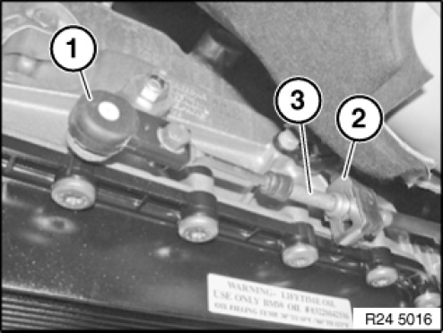</div><br><br><br><br><br><b>Version 4:</b><br>Move selector lever to "Parking".<br>Release shift cable head (1) using a screwdriver from ball head of gearshift lever.<br>Detach clamp (2) downwards using a screwdriver.<br>Slide cable (3) towards rear and disengaged in downward direction.<br><br>Installation note:<br>Adjusting gearshift lever<br><br><br><div class='oxe-image'>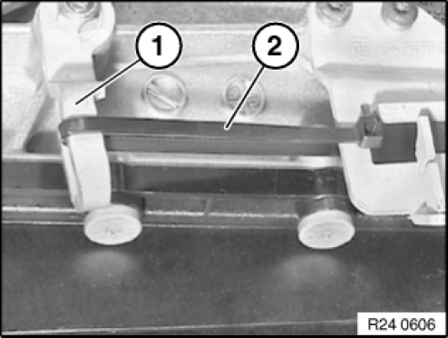</div><br><br><br><br><br>Secure lever (1) with a cable strap (2) or wire in vertical position.<br><br><b>NOTE:</b>  E65 only.<br><br><br><div class='oxe-image'>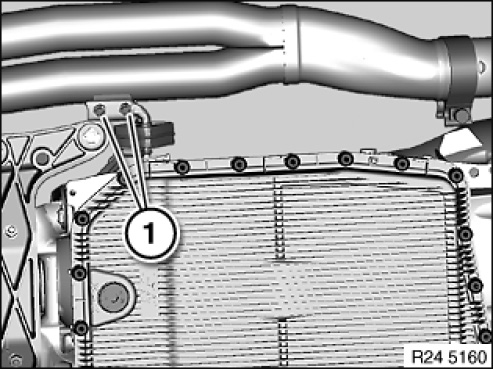</div><br><br><br><br><br><b>only M57T2</b><br>Release screws (1).<br><br><br><div class='oxe-image'>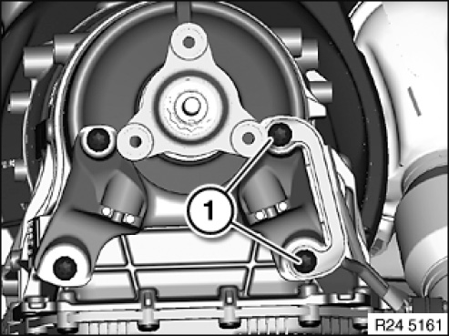</div><br><br><br><br><br><b>only M57T2</b><br>Release screws (1).<br>Bracket remove.<br>Tightening torque 24 71 6AZ.  <a href="6784.html">00 00 Excerpt From Company Standard BMW GS 90003-2</a><br><br><br><div class='oxe-image'>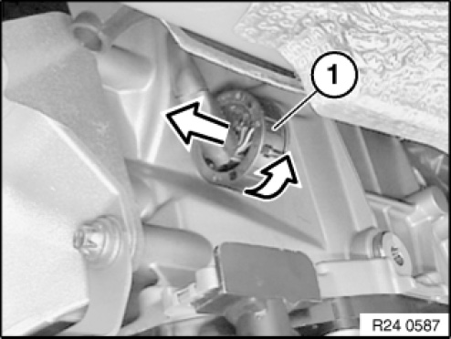</div><br><br><br><br><br><b>IMPORTANT:</b>  Mechatronics can be destroyed by static discharges. Therefore the contacts inside the connector must not be touched. Insert special tool immediately after operation.<br><br>Unscrew connector (1) and disconnect.<br><br><br><div class='oxe-image'>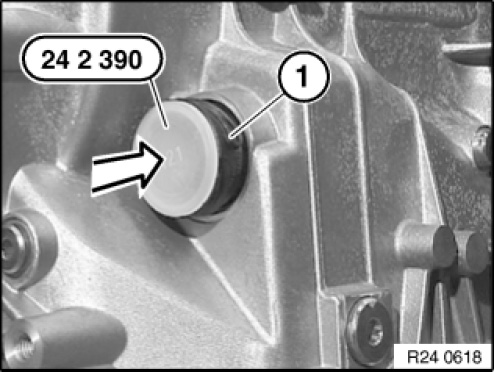</div><br><br><br><br><br>Insert special tool 24 2 390 in sealing cup (1).<br><br><br><div class='oxe-image'></div><br><br><br><br><br>Remove transmission oil sump.<br><br><br><div class='oxe-image'>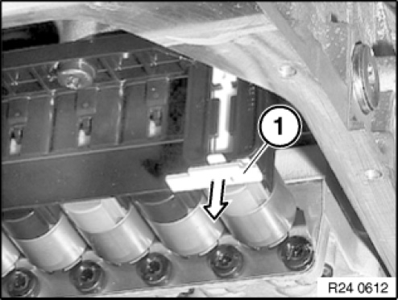</div><br><br><br><br><br>Unlock sealing sleeve with slide (1).<br><br><br><div class='oxe-image'>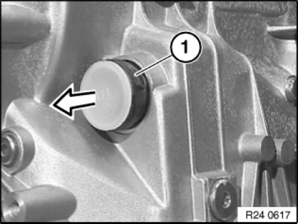</div><br><br><br><br><br>Note position of sealing cup.<br>Pull out sealing cup (1).<br><br>Installation note:<br>Screw in sealing sleeve partially (lug in upper area). Turn until lug engages in groove of transmission. Slide in sealing cup.<br><br>Lug on sealing sleeve must not be damaged.<br><br><b>NOTE:</b>  GA6HP19Z<br><br><br><div class='oxe-image'>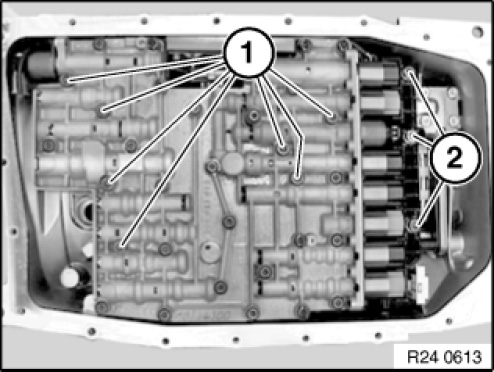</div><br><br><br><br><br>Release all screws (1 and 2).<br><span class='indent-2'>&#09;</span>-<span class='indent-5'>&#09;</span>1 = M6 x 58 mm<br><span class='indent-2'>&#09;</span>-<span class='indent-5'>&#09;</span>2 = M6 x 20 mm<br>Remove mechatronics.<br><br><br><div class='oxe-image'></div><br><br><br><br><br><b>NOTE:</b>  GA6HP19Z TU<br><br>Release all screws (1 and 2).<br><span class='indent-2'>&#09;</span>-<span class='indent-5'>&#09;</span>1 = M6 x 59 mm<br><span class='indent-2'>&#09;</span>-<span class='indent-5'>&#09;</span>2 = M6 x 20 mm<br>Remove mechatronics.<br><br><br><div class='oxe-image'>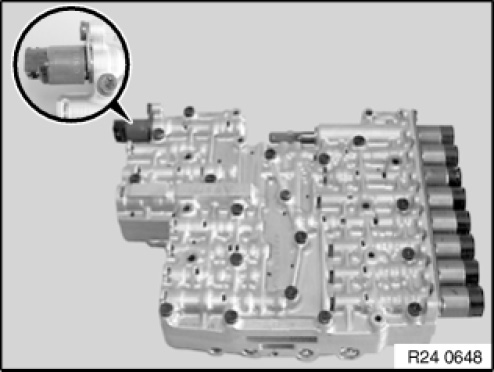</div><br><br><br><br><br><b>IMPORTANT:</b><br>Only installed in E65.<br>Mechatronics without protective bar for solenoid valve must not be reused after removal.<br><br><b>IMPORTANT:</b>  Only installed in E65.<br><br><br><div class='oxe-image'>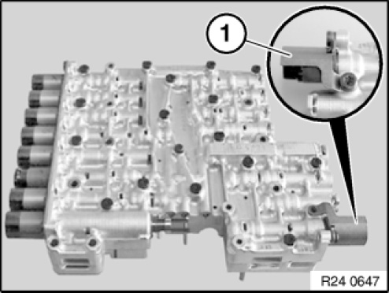</div><br><br><br><br><br>Fit/reuse only mechatronics with protective bar (1) for solenoid valve.<br><br><br><div class='oxe-image'>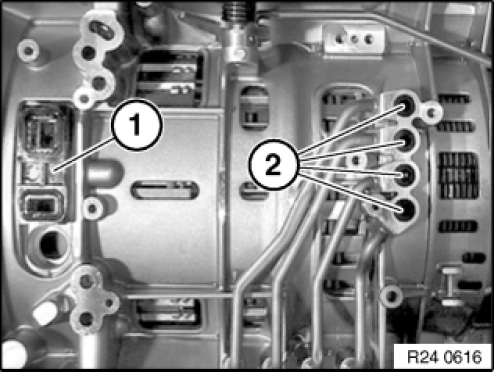</div><br><br><br><br><br>Installation note:<br>Check gaskets (1 and 2) for damage, replace gaskets if necessary.<br>Coat new gaskets with automatic transmission fluid and install.<br><br><br><div class='oxe-image'>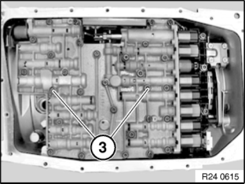</div><br><br><br><br><br>Installation note:<br>Insert screws (3) alternately until contact is made with each screw head.<br>Insert all further screws contact is made with each screw head.<br><br><b>NOTE:</b>  GA6HP19Z<br><br><br><div class='oxe-image'>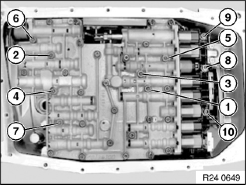</div><br><br><br><br><br><b>IMPORTANT:</b><br>Tighten down screws in order 1...10.<br>Failure to comply with this requirement will result in serious damage to the automatic transmission.<br>Tightening torque 24 30 1AZ.<br><br><br><div class='oxe-image'>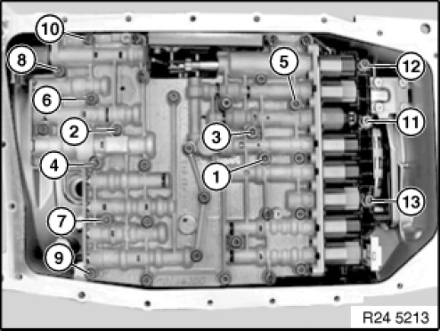</div><br><br><br><br><br><b>NOTE:</b>  GA6HP19Z TU<br><br><b>IMPORTANT:</b><br>Tighten down screws in order 1...13.<br>Failure to comply with this requirement will result in serious damage to the automatic transmission.<br>Tightening torque 24 30 1AZ.<br><br><br><div class='oxe-image'>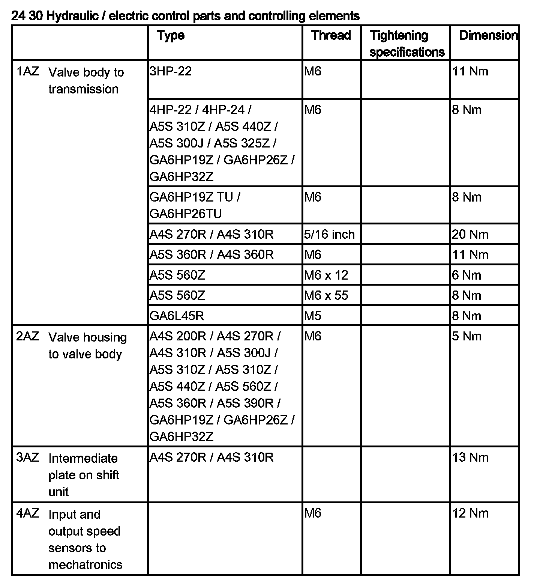</div><br><br><br><br><br><br><h3>��:</h3><div class='oxe-image'>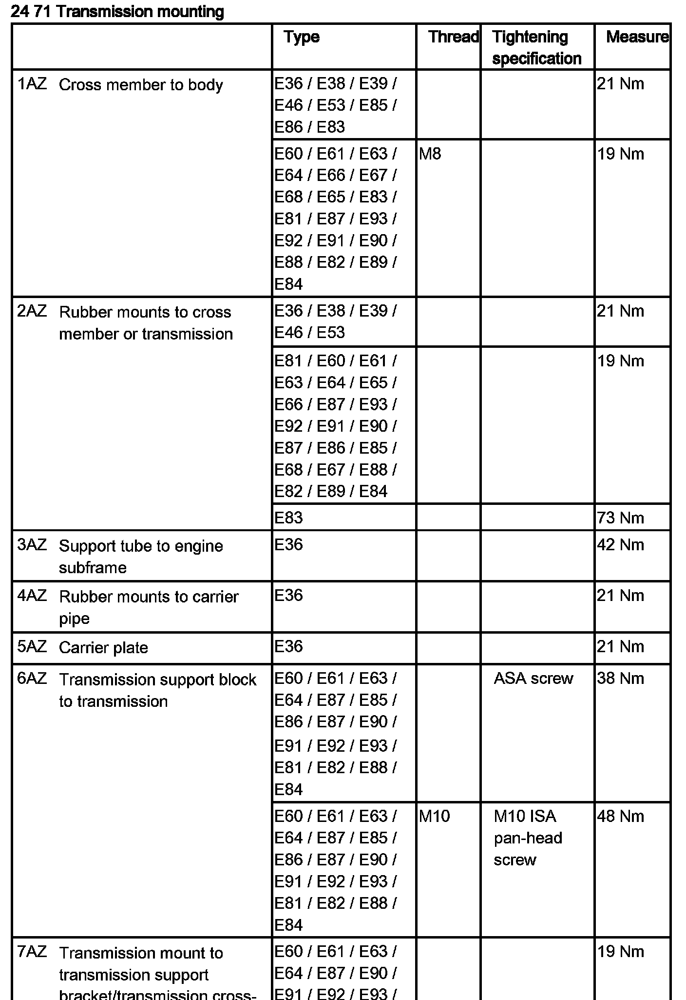</div><br><br><br><br><br><br></div>
<div class="theme-colors footer">
  <i>pro multis</i> · <a href="../about.html">About Operation CHARM</a>
</div>
<script src="../script.js"></script>
</body>
</html>
